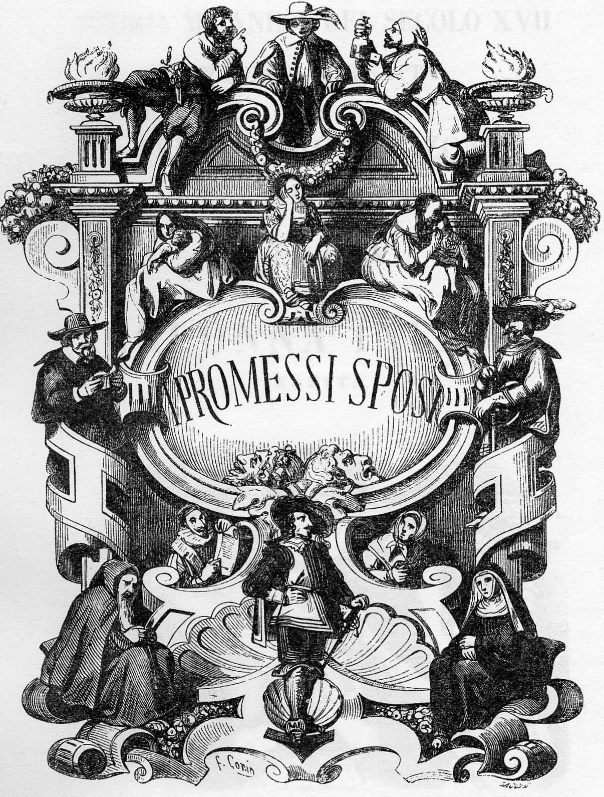

I Promessi Sposi di Alessandro Manzoni
Sinossi
La prima edizione è del 1827, l’edizione definitiva del 1840. Assegnando agli umili il ruolo di protagonisti, lo scrittore immagina, in una trama semplice ma fitta di occasioni romanzesche, personaggi “viventi” ed esemplari al tempo stesso, e scopre nelle tragiche contraddizioni del Seicento le chiavi di un’interpretazione socio-politica del presente da proporre ai suoi contemporanei. I soprusi dei potenti, la carestie e le guerre, la peste, tutti gli accadimenti del racconto risultano integrati e risolti nella chiara e malinconica visione provvidenziale dei giusti (padre Cristoforo, il cardinale Federigo), nel buonsenso di Renzo e Lucia, nell’insondabile tristezza dell’Innominato.
Scarica PDF- Introduzione
- Capitolo 1
- Capitolo 2
- Capitolo 3
- Capitolo 4
- Capitolo 5
- Capitolo 6
- Capitolo 7
- Capitolo 8
- Capitolo 9
- Capitolo 10
- Capitolo 11
- Capitolo 12
- Capitolo 13
- Capitolo 14
- Capitolo 15
- Capitolo 16
- Capitolo 17
- Capitolo 18
- Capitolo 19
- Capitolo 20
- Capitolo 21
- Capitolo 22
- Capitolo 23
- Capitolo 24
- Capitolo 25
- Capitolo 26
- Capitolo 27
- Capitolo 28
- Capitolo 29
- Capitolo 30
- Capitolo 31
- Capitolo 32
- Capitolo 33
- Capitolo 34
- Capitolo 35
- Capitolo 36
- Capitolo 37
- Capitolo 38